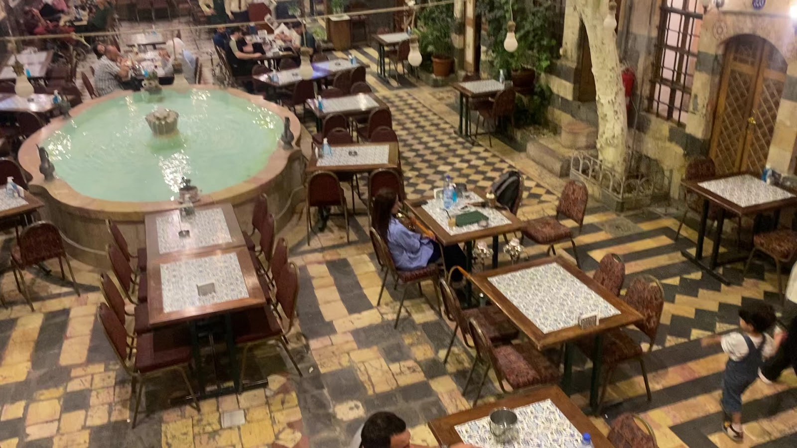
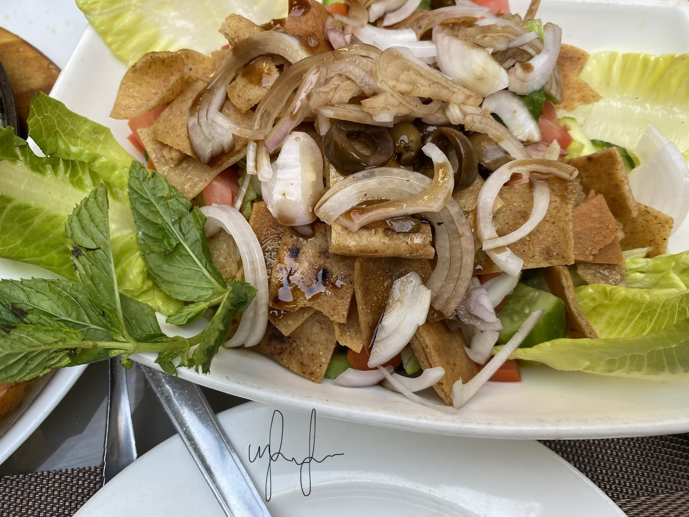
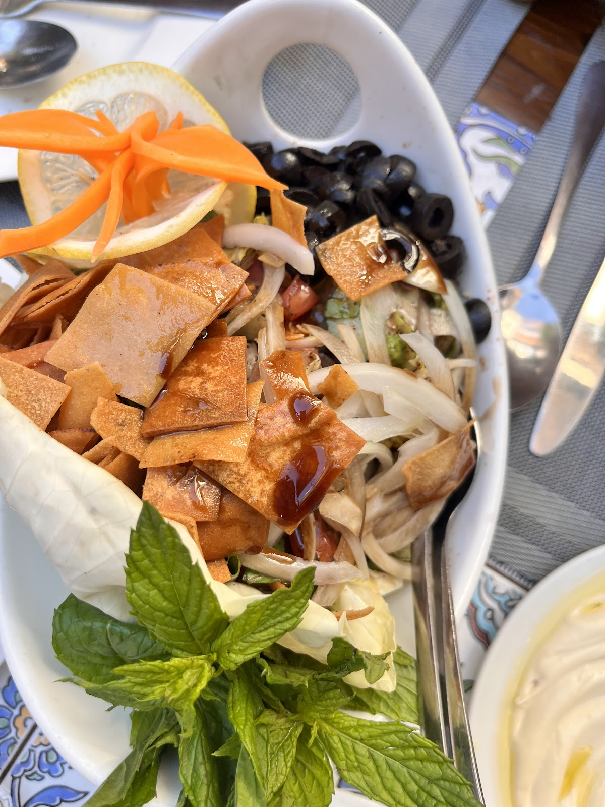
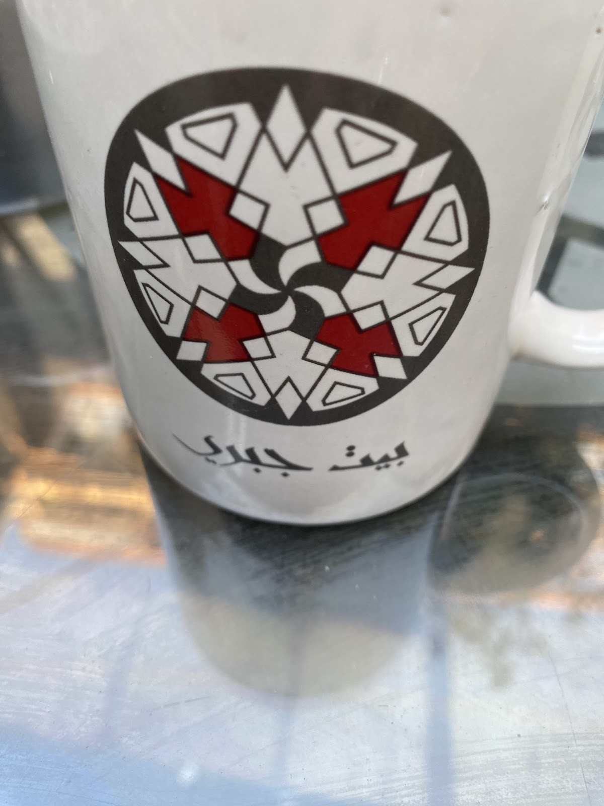
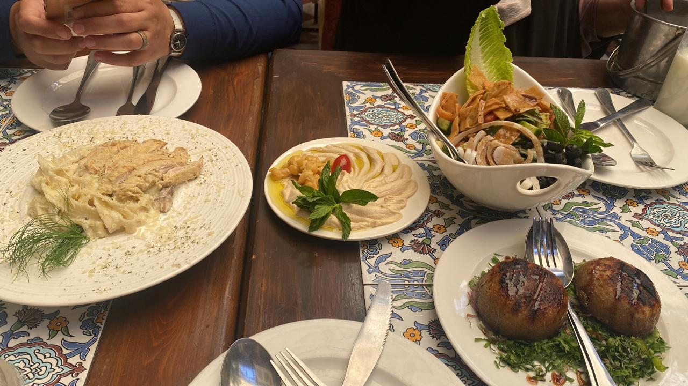
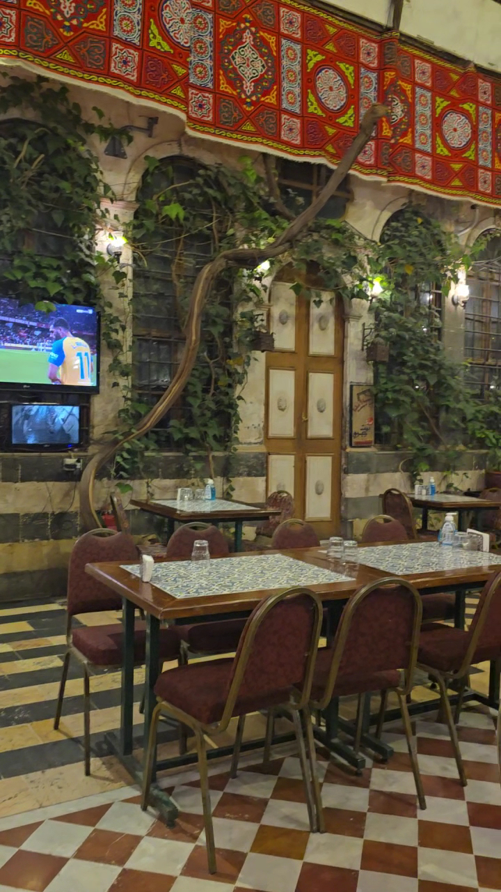

بيت دمشقي واقف من عام ١٧٣٧ — حوش مسقوف بالسما، خشب عجمي مرسوم بإيد الصنّاع، وفتّة صيتها وصل قبل ما توصلوا.A Damascene house standing since 1737 — an open-sky courtyard, hand-painted ajami wood, and a fatteh whose fame arrives before you do.
بين حارات دمشق القديمة، وعلى خطوات من سوق الحرير، بيقعد بيت جبري متل ما هو من قرابة ثلاثة قرون: حوش مبلّط أبيض وأسود، بحرة بنصّ الدار، شجر مظلّل، وغرف مكسيّة بالخشب العجمي المرسوم اللي كان زينة بيوت الشام الكبيرة.Among the lanes of Old Damascus, Beit Jabri sits much as it has for nearly three centuries: a chequered courtyard of black and white stone, a fountain at its centre, shading trees, and rooms lined with the hand-painted ajami woodwork that once adorned the grand houses of Damascus.
صارت الدار مطعماً، وصار اسمها مقروناً بالفتّة: فتة بيت جبري اللي بيقصدها الناس من كل الدنيا، تتاكل عالحوش بين خرير البحرة وضحك الطاولات. من أهل الحي لضيوف مرقوا مرة وما نسيوا — كل واحد إلو بهالبيت قعدة وذكرى.The house became a restaurant, and its name became inseparable from fatteh: the Beit Jabri fatteh people cross the world for, eaten in the courtyard between the fountain's murmur and the laughter of the tables. From neighbours to guests who passed once and never forgot — everyone keeps a seat and a memory in this house.


الطبق اللي بيحمل اسم البيت — خبز محمّص ولبن وسمنة عربية، عالسخن وعالحوش.The plate that carries the house's name — toasted bread, yogurt and clarified butter, served hot in the courtyard.

شرحات بيت جبري، كباب ومشاوي مشكلة عالطريقة الشامية — سفرة غدا بتليق بالدار.Beit Jabri cutlets, kebab and mixed grill the Damascene way — a lunch worthy of the house.

شاي أو قهوة بكاسة بتحمل اسم البيت — الضيافة هون جزء من العمارة.Tea or coffee in a cup bearing the house's name — hospitality here is part of the architecture.


"What a place! A true find. Started at midnight with a late reservation after a trade show. Our party of 12 arrived by golf cart after a 10 minute ride up through the old town from one of the Gates of Damascus."
"Amazing! The service, ambience, and food are just wonderful. Everyone is courteous and welcoming, exemplifying the true spirit of Damascus generosity."
"The restaurant (old Syrian house) was super cool."
★ 4.3 / 5 — 301 تقييم على غوغلGoogle reviews
| يومياًDaily | 10:00 – 24:0010:00 – 24:00 |
الدوام من لائحة غوغل — للمناسبات والطاولات الكبيرة اتصلوا قبل.Hours as listed on Google — for occasions and large tables, call ahead.
١٤ السواف — دمشق القديمة
للحجز:For bookings: +963 11 544 3200
اتصلوا فيناCall us افتحوا الخريطةOpen in Maps إنستغرامInstagram